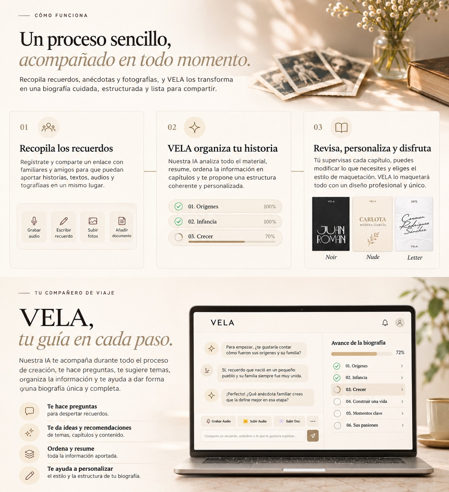
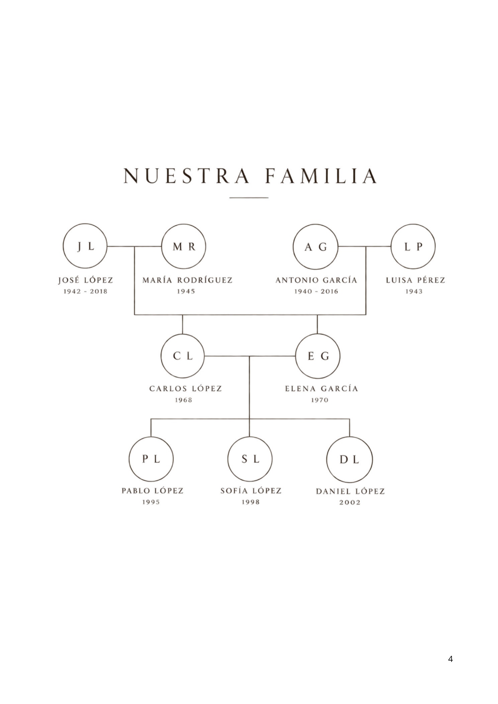
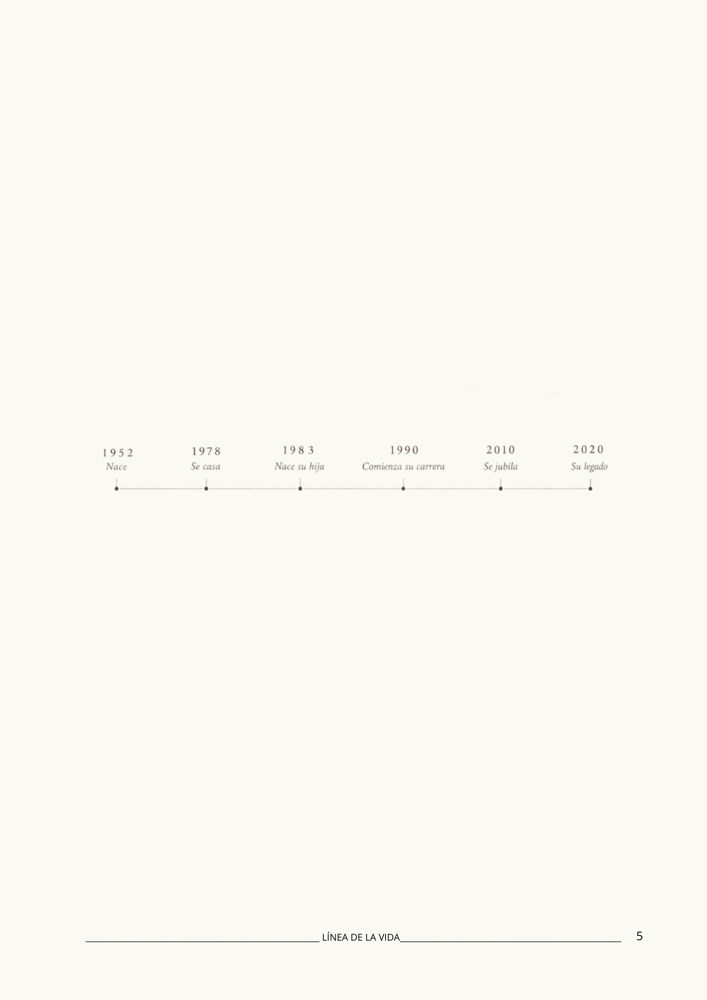
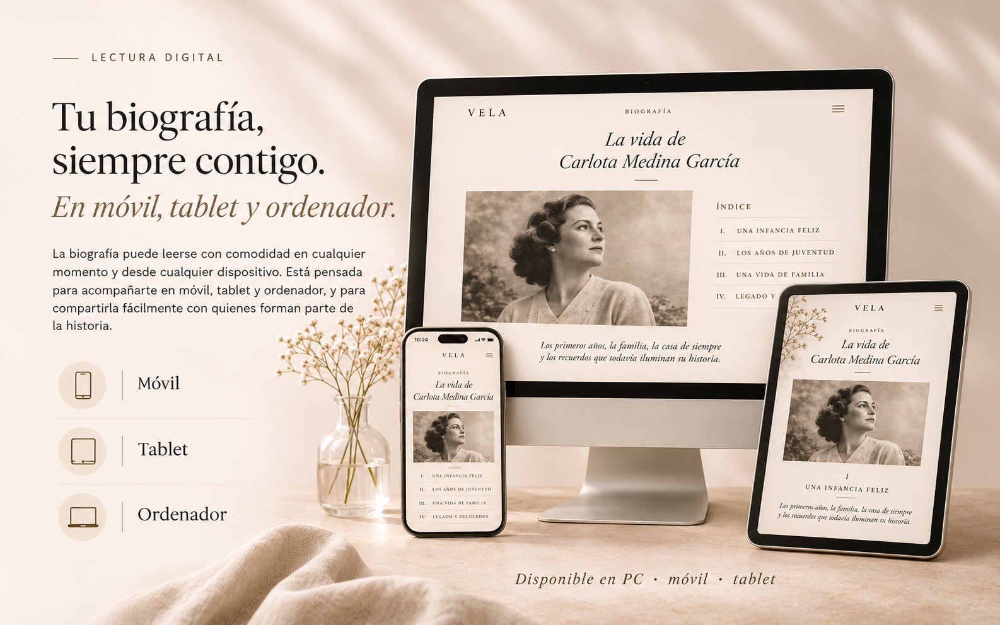

Una historia única, en digital y para regalar.
VELA transforma recuerdos, fotografías y testimonios en una biografía digital personalizada, cuidada y lista para leer en cualquier dispositivo.
Una biografía digital personalizada sobre ti o sobre alguien querido, estructurada en capítulos narrativos con rigor editorial.
Maquetación editorial, lectura digital en tablet, móvil y ordenador, descarga en PDF de alta fidelidad y una entrega física con sobre VELA y tarjeta QR.
La biografía lista para leer y compartir con la familia, junto con un sobre de regalo de papel marfil y sello de lacre que convierte la entrega en una experiencia emotiva.

Tarjeta de dedicatoria personal con código QR único
Un recuerdo para leer.
Un regalo para guardar.
Una biografía personalizada en formato digital, creada con los recuerdos, fotografías y testimonios de una persona, y presentada con un sobre y una tarjeta QR física para entregar en mano.
Así se transforma una vida en una biografía:
VELA convierte el material aportado en una historia organizada por capítulos, con fotografías y recuerdos que la familia podrá revisar, conservar y compartir para siempre.
- Portada personalizada
- Capítulos de vida e hitos
- Fotografías restauradas
- Descarga en PDF digital

Prólogo · Plantilla Letter

Línea de vida · Recuerdos
La misma emoción.
Tres formas de contarla.
Cada vida tiene su propia personalidad. Por eso hemos creado tres estilos editoriales para transformar sus recuerdos en una biografía única, legible en visor digital y PDF.

Clásico, cercano y lleno de memoria
Carmen Rodríguez Sánchez
El encanto de las cartas antiguas, el papel con textura cálida y una caligrafía que recuerda a los álbumes y archivos familiares más queridos.

Gráfico, sobrio y con carácter
Juan Román Ortiz
Una propuesta más audaz y contemporánea, con contraste visual en negro carbón, tipografía de gran personalidad y una identidad rotunda.

Sereno, delicado y atemporal
Carlota Medina García
Una maquetación suave y elegante en tonos topo y grises cálidos, con amplios márgenes que dejan respirar cada fotografía y cada recuerdo.
Nota: Los tres estilos editoriales están disponibles en cualquier plan que elijas, en formato digital interactivo y descargable en PDF.
Tu biografía, siempre contigo.
En móvil, tablet y ordenador.
Tu historia puede acompañarte estés donde estés. Disfrútala cómodamente desde cualquier pantalla y comparte capítulos específicos con quienes forman parte de ella.


Una historia para entregar.
Un regalo para recordar.
VELA convierte una biografía digital en una experiencia de regalo tangible. Un sobre especial de papel marfil, una dedicatoria personal y una tarjeta QR que abre toda una vida en un instante.
Sobre VELA con sello lacrado
Elegante papel verjurado marfil cerrado con sello burdeos con la inicial V.
Tarjeta personalizada con dedicatoria
"La historia de la vida de Carlota Medina García. De tu familia que te quiere."
Código QR de acceso directo
Permite abrir la biografía inmediatamente desde la cámara de cualquier teléfono móvil.